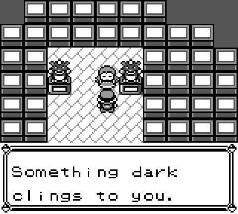
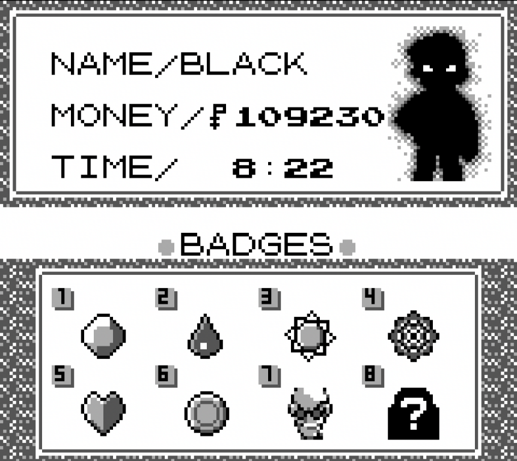
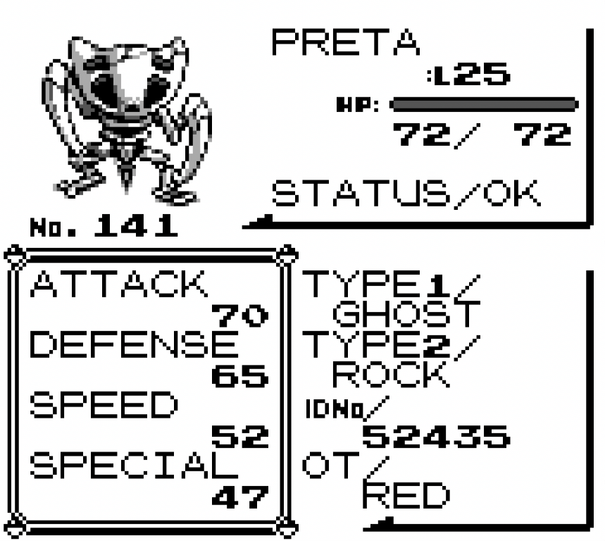
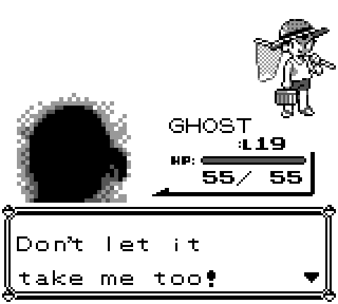
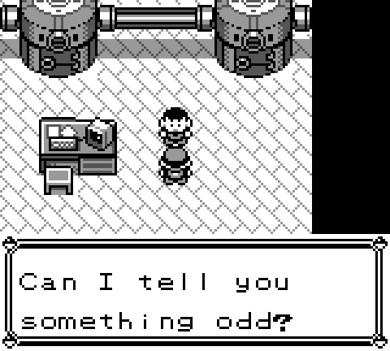

Gameplay screenshots from current development build.

If a Pokémon kills someone while fighting for its Trainer…
Who is responsible?
Uncover the hidden history of Kanto.
An expanded reimagining of the original Pokémon Creepy Black creepypasta and the fan-made ROM hack it inspired.
Revisit the world of Pokémon Red, where a forgotten history lies buried beneath Kanto's seemingly ordinary surface you know and remember.
What may feel familiar at first may gradually become something else. Strange encounters, different scenarios, and decisions that leave lasting consequences.
Explore Kanto's hidden history, and find what extends far beyond the Pokémon League.





Gameplay screenshots from current development build.
Please note: This site will distribute a patch only, not a copyrighted Pokémon ROM. Some choices may have irreversible consequences. Check release notes for save compatibility before installing updates.
Launch checklist: compatible base ROM hash · patcher link · installation steps · known issues · credits.
/// COMMENTS
Share theories, bugs, and feedback. Comments are powered by GitHub Discussions — sign in with GitHub to post.